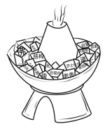

第 1 题 #
1.A. affectedB. achievedC. extractedD. restored
点击查看答案
此题暂无可用答案。
考研英语 · questions · 2010
题号和章节目录由结构化数据生成。选项按卷面字母顺序显示；原标记保留在 JSON 中。
Read the following text. Choose the best word(s) for each numbered blank and mark A, B, C or D on ANSWER SHEET 1. (10 points)
In 1924 America’s National Research Council sent two engineers to supervise a series of experiments at a telephone-parts factory called the Hawthorne Plant near Chicago. It hoped they would learn how shop-floor lighting 1 workers’ productivity. Instead, the studies ended 2 giving their name to the “Hawthorne effect”, the extremely influential idea that the very 3 of being experimented upon changed subjects’ behavior.
The idea arose because of the 4 behavior of the women in the plant. According to 5 of the experiments, their hourly output rose when lighting was increased, but also when it was dimmed. It did not 6 what was done in the experiment; 7 something was changed, productivity rose. A(n) 8 that they were being experimented upon seemed to be 9 to alter workers’ behavior 10 itself.
After several decades, the same data were 11 to econometric analysis. The Hawthorne experiments had another surprise in store. 12 the descriptions on record, no systematic 13 was found that levels of productivity were related to changes in lighting.
It turns out that the peculiar way of conducting the experiments may have led to 14 interpretations of what happened. 15 , lighting was always changed on a Sunday. When work started again on Monday, output 16 rose compared with the previous Saturday and 17 to rise for the next couple of days. 18 , a comparison with data for weeks when there was no experimentation showed that output always went up on Mondays. Workers 19 to be diligent for the first few days of the week in any case, before 20 a plateau and then slackening off. This suggests that the alleged “Hawthorne effect” is hard to pin down.
此题暂无可用答案。
此题暂无可用答案。
此题暂无可用答案。
此题暂无可用答案。
此题暂无可用答案。
此题暂无可用答案。
此题暂无可用答案。
此题暂无可用答案。
此题暂无可用答案。
此题暂无可用答案。
此题暂无可用答案。
此题暂无可用答案。
此题暂无可用答案。
此题暂无可用答案。
此题暂无可用答案。
此题暂无可用答案。
此题暂无可用答案。
此题暂无可用答案。
此题暂无可用答案。
此题暂无可用答案。
Read the following four texts. Answer the questions below each text by choosing A, B, C or D. Mark your answers on ANSWER SHEET 1. (40 points)
Of all the changes that have taken place in English-language newspapers during the past quarter-century, perhaps the most far-reaching has been the inexorable decline in the scope and seriousness of their arts coverage.
It is difficult to the point of impossibility for the average reader under the age of forty to imagine a time when high-quality arts criticism could be found in most big-city newspapers. Yet a considerable number of the most significant collections of criticism published in the 20th century consisted in large part of newspaper reviews. To read such books today is to marvel at the fact that their learned contents were once deemed suitable for publication in general-circulation dailies.
We are even farther removed from the unfocused newspaper reviews published in England between the turn of the 20th century and the eve of World War Ⅱ, at a time when newsprint was dirt-cheap and stylish arts criticism was considered an ornament to the publications in which it appeared. In those far-off days, it was taken for granted that the critics of major papers would write in detail and at length about the events they covered. Theirs was a serious business, and even those reviewers who wore their learning lightly, like George Bernard Shaw and Ernest Newman, could be trusted to know what they were about. These men believed in journalism as a calling, and were proud to be published in the daily press. “So few authors have brains enough or literary gift enough to keep their own end up in journalism,” Newman wrote, “that I am tempted to define ‘journalism’ as ‘a term of contempt applied by writers who are not read to writers who are’.”
Unfortunately, these critics are virtually forgotten. Neville Cardus, who wrote for the Manchester Guardian from 1917 until shortly before his death in 1975, is now known solely as a writer of essays on the game of cricket. During his lifetime, though, he was also one of England’s foremost classical-music critics, and a stylist so widely admired that his Autobiography (1947) became a best-seller. He was knighted in 1967, the first music critic to be so honored. Yet only one of his books is now in print, and his vast body of writings on music is unknown save to specialists.
Is there any chance that Cardus’s criticism will enjoy a revival? The prospect seems remote. Journalistic tastes had changed long before his death, and postmodern readers have little use for the richly upholstered Vicwardian prose in which he specialized. Moreover, the amateur tradition in music criticism has been in headlong retreat.
21. It is indicated in Paragraphs 1 and 2 that ____
此题暂无可用答案。
22. Newspaper reviews in England before World War Ⅱ were characterized by ____
此题暂无可用答案。
23. Which of the following would Shaw and Newman most probably agree on?
此题暂无可用答案。
24. What can be learned about Cardus according to the last two paragraphs?
此题暂无可用答案。
25. What would be the best title for the text?
此题暂无可用答案。
Over the past decade, thousands of patents have been granted for what are called business methods. Amazon.com received one for its “one-click” online payment system. Merrill Lynch got legal protection for an asset allocation strategy. One inventor patented a technique for lifting a box.
Now the nation’s top patent court appears completely ready to scale back on business-method patents, which have been controversial ever since they were first authorized 10 years ago. In a move that has intellectual-property lawyers abuzz, the US Court of Appeals for the Federal Circuit said it would use a particular case to conduct a broad review of business-method patents. In re Bilski, as the case is known, is “a very big deal,” says Dennis D. Crouch of the University of Missouri School of Law. It “has the potential to eliminate an entire class of patents.”
Curbs on business-method claims would be a dramatic about-face, because it was the Federal Circuit itself that introduced such patents with its 1998 decision in the so-called State Street Bank case, approving a patent on a way of pooling mutual-fund assets. That ruling produced an explosion in business-method patent filings, initially by emerging Internet companies trying to stake out exclusive rights to specific types of online transactions. Later, more established companies raced to add such patents to their files, if only as a defensive move against rivals that might beat them to the punch. In 2005, IBM noted in a court filing that it had been issued more than 300 business-method patents, despite the fact that it questioned the legal basis for granting them. Similarly, some Wall Street investment firms armed themselves with patents for financial products, even as they took positions in court cases opposing the practice.
The Bilski case involves a claimed patent on a method for hedging risk in the energy market. The Federal Circuit issued an unusual order stating that the case would be heard by all 12 of the court’s judges, rather than a typical panel of three, and that one issue it wants to evaluate is whether it should “reconsider” its State Street Bank ruling.
The Federal Circuit’s action comes in the wake of a series of recent decisions by the Supreme Court that has narrowed the scope of protections for patent holders. Last April, for example, the justices signaled that too many patents were being upheld for “inventions” that are obvious. The judges on the Federal Circuit are “reacting to the anti-patent trend at the
Supreme Court,” says Harold C. Wegner, a patent attorney and professor at George Washington University, Law School.
26. Business-method patents have recently aroused concern because of ____
此题暂无可用答案。
27. Which of the following is true of the Bilski case?
此题暂无可用答案。
28. The word “about-face” (Para. 3) most probably means ____
此题暂无可用答案。
29. We learn from the last two paragraphs that business-method patents ____
此题暂无可用答案。
30. Which of the following would be the subject of the text?
此题暂无可用答案。
In his book The Tipping Point, Malcolm Gladwell argues that “social epidemics” are driven in large part by the actions of a tiny minority of special individuals, often called influentials, who are unusually informed, persuasive, or well connected. The idea is intuitively compelling, but it doesn’t explain how ideas actually spread.
The supposed importance of influentials derives from a plausible-sounding but largely untested theory called the “two-step flow of communication”: Information flows from the media to the influentials and from them to everyone else. Marketers have embraced the two-step flow because it suggests that if they can just find and influence the influentials, those select people will do most of the work for them. The theory also seems to explain the sudden and unexpected popularity of certain looks, brands, or neighborhoods. In many such cases, a cursory search for causes finds that some small group of people was wearing, promoting, or developing whatever it is before anyone else paid attention. Anecdotal evidence of this kind fits nicely with the idea that only certain special people can drive trends.
In their recent work, however, some researchers have come up with the finding that influentials have far less impact on social epidemics than is generally supposed. In fact, they don’t seem to be required at all.
The researchers’ argument stems from a simple observation about social influence: With the exception of a few celebrities like Oprah Winfrey — whose outsize presence is primarily a function of media, not interpersonal influence — even the most influential members of a population simply don’t interact with that many others. Yet it is precisely these non-celebrity influentials who, according to the two-step-flow theory, are supposed to drive social epidemics, by influencing their friends and colleagues directly. For a social epidemic to occur, however, each person so affected must then influence his or her own acquaintances, who must in turn influence theirs, and so on; and just how many others pay attention to each of these people has little to do with the initial influential. If people in the network just two degrees removed from the initial influential prove resistant, for example, the cascade of change won’t propagate very far or affect many people.
Building on the basic truth about interpersonal influence, the researchers studied the dynamics of social influence by conducting thousands of computer simulations of populations, manipulating a number of variables relating to people’s ability to influence others and their tendency to be influenced. They found that the principal requirement for what is called “global cascades” — the widespread propagation of influence through networks — is the presence not of a few influentials but, rather, of a critical mass of easily influenced people.
31. By citing the book The Tipping Point, the author intends to ____
此题暂无可用答案。
32. The author suggests that the “two-step-flow theory” ____
此题暂无可用答案。
33. What the researchers have observed recently shows that ____
此题暂无可用答案。
34. The underlined phrase “these people” in Paragraph 4 refers to the ones who ____
此题暂无可用答案。
35. What is the essential element in the dynamics of social influence?
此题暂无可用答案。
Bankers have been blaming themselves for their troubles in public. Behind the scenes, they have been taking aim at someone else: the accounting standard-setters. Their rules, moan the banks, have forced them to report enormous losses, and it’s just not fair. These rules say they must value some assets at the price a third party would pay, not the price managers and regulators would like them to fetch.
Unfortunately, banks’ lobbying now seems to be working. The details may be unknowable, but the independence of standard-setters, essential to the proper functioning of capital markets, is being compromised. And, unless banks carry toxic assets at prices that attract buyers, reviving the banking system will be difficult.
After a bruising encounter with Congress, America’s Financial Accounting Standards Board (FASB) rushed through rule changes. These gave banks more freedom to use models to value illiquid assets and more flexibility in recognizing losses on long-term assets in their income statements. Bob Herz, the FASB’s chairman, cried out against those who “question our motives.” Yet bank shares rose and the changes enhance what one lobbying group politely calls “the use of judgment by management.”
European ministers instantly demanded that the International Accounting Standards Board (IASB) do likewise. The IASB says it does not want to act without overall planning, but the pressure to fold when it completes its reconstruction of rules later this year is strong. Charlie McCreevy, a European commissioner, warned the IASB that it did “not live in a political vacuum” but “in the real world” and that Europe could yet develop different rules.
It was banks that were on the wrong planet, with accounts that vastly overvalued assets. Today they argue that market prices overstate losses, because they largely reflect the temporary illiquidity of markets, not the likely extent of bad debts. The truth will not be known for years. But banks’ shares trade below their book value, suggesting that investors are skeptical. And dead markets partly reflect the paralysis of banks which will not sell assets for fear of booking losses, yet are reluctant to buy all those supposed bargains.
To get the system working again, losses must be recognized and dealt with. America’s new plan to buy up toxic assets will not work unless banks mark assets to levels which buyers find attractive. Successful markets require independent and even combative standard-setters. The FASB and IASB have been exactly that, cleaning up rules on stock options and pensions, for example, against hostility from special interests. But by giving in to critics now they are inviting pressure to make more concessions.
36. Bankers complained that they were forced to ____
此题暂无可用答案。
37. According to the author, the rule changes of the FASB may result in ____
此题暂无可用答案。
38. According to Paragraph 4, McCreevy objects to the IASB’s attempt to ____
此题暂无可用答案。
39. The author thinks the banks were “on the wrong planet” in that they ____
此题暂无可用答案。
40. The author’s attitude towards standard-setters is one of ____.
此题暂无可用答案。
For questions 41-45, choose the most suitable paragraphs from the list A-G and fill them into the numbered boxes to form a coherent text. Paragraph E has been correctly placed. There is one paragraph which does not fit in with the text. Mark your answers on ANSWER SHEET 1. (10 points)
A) The first and more important is the consumer’s growing preference for eating out: the consumption of food and drink in places other than homes has risen from about 32 percent of total consumption in 1995 to 35 percent in 2000 and is expected to approach 38 percent by 2005. This development is boosting wholesale demand from the food service segment by 4 to 5 percent a year across Europe, compared with growth in retail demand of 1 to 2 percent. Meanwhile, as the recession is looming large, people are getting anxious. They tend to keep a tighter hold on their purse and consider eating at home a realistic alternative.
B) Retail sales of food and drink in Europe’s largest markets are at a standstill, leaving European grocery retailers hungry for opportunities to grow. Most leading retailers have already tried e-commerce, with limited success, and expansion abroad. But almost all have ignored the big, profitable opportunity in their own backyard: the wholesale food and drink trade, which appears to be just the kind of market retailers need.
C) Will such variations bring about a change in the overall structure of the food and drink market? Definitely not. The functioning of the market is based on flexible trends dominated by potential buyers. In other words, it is up to the buyer, rather than the seller, to decide what to buy. At any rate, this change will ultimately be acclaimed by an ever-growing number of both domestic and international consumers, regardless of how long the current consumer pattern will take hold.
D) All in all, this clearly seems to be a market in which big retailers could profitably apply their gigantic scale, existing infrastructure, and proven skills in the management of product ranges, logistics, and marketing intelligence. Retailers that master the intricacies of wholesaling in Europe may well expect to rake in substantial profits thereby. At least, that is how it looks as a whole. Closer inspection reveals important differences among the biggest national markets, especially in their customer segments and wholesale structures, as well as the competitive dynamics of individual food and drink categories. Big retailers must understand these differences before they can identify the segments of European wholesaling in which their particular abilities might unseat smaller but entrenched competitors. New skills and unfamiliar business models are needed too.
E) Despite variations in detail, wholesale markets in the countries that have been closely examined — France, Germany, Italy and Spain — are made out of the same building blocks. Demand comes mainly from two sources: independent mom-and-pop grocery stores which, unlike large retail chains, are too small to buy straight from producers, and food service operators that cater to consumers when they don’t eat at home. Such food service operators range from snack machines to large institutional catering ventures, but most of these businesses are known in the trade as “horeca”: hotels, restaurants and cafés. Overall, Europe’s wholesale market for food and drink is growing at the same sluggish pace as the retail market, but the figures, when added together, mask two opposing trends.
F) For example, wholesale food and drink sales came to $268 billion in France, Germany, Italy, Spain, and the United Kingdom in 2000 — more than 40 percent of retail sales. Moreover, average overall margins are higher in wholesale than in retail; wholesale demand from the food service sector is growing quickly as more Europeans eat out more often; and changes in the competitive dynamics of this fragmented industry are at last making it feasible for wholesalers to consolidate.
G) However, none of these requirements should deter large retailers (and even some large food producers and existing wholesalers) from trying their hand, for those that master the intricacies of wholesaling in Europe stand to reap considerable gains.
41.
请结合上方 Part B 段落和原卷流程图作答。
此题暂无可用答案。
42.
请结合上方 Part B 段落和原卷流程图作答。
此题暂无可用答案。
43.
请结合上方 Part B 段落和原卷流程图作答。
此题暂无可用答案。
44.
请结合上方 Part B 段落和原卷流程图作答。
此题暂无可用答案。
45.
请结合上方 Part B 段落和原卷流程图作答。
此题暂无可用答案。
Read the following text carefully and then translate the underlined segments into Chinese. Your translation should be written clearly on ANSWER SHEET 2. (10 points)
One basic weakness in a conservation system based wholly on economic motives is that most members of the land community have no economic value. Yet these creatures are members of the biotic community and, if its stability depends on its integrity, they are entitled to continuance.
When one of these noneconomic categories is threatened and, if we happen to love it, we invent excuses to give it economic importance. At the beginning of the century songbirds were supposed to be disappearing. (46) Scientists jumped to the rescue with some distinctly shaky evidence to the effect that insects would eat us up if birds failed to control them. The evidence had to be economic in order to be valid.
It is painful to read these roundabout accounts today. We have no land ethic yet, (47) but we have at least drawn nearer the point of admitting that birds should continue as a matter of intrinsic right, regardless of the presence or absence of economic advantage to us.
A parallel situation exists in respect of predatory mammals and fish-eating birds. (48) Time was when biologists somewhat overworked the evidence that these creatures preserve the health of game by killing the physically weak, or that they prey only on “worthless” species. Here again, the evidence had to be economic in order to be valid. It is only in recent years that we hear the more honest argument that predators are members of the community, and that no special interest has the right to exterminate them for the sake of a benefit, real or fancied, to itself.
Some species of trees have been “read out of the party” by economics-minded foresters because they grow too slowly, or have too low a sale value to pay as timber crops. (49) In Europe, where forestry is ecologically more advanced, the noncommercial tree species are recognized as members of the native forest community, to be preserved as such, within reason. Moreover, some have been found to have a valuable function in building up soil fertility. The interdependence of the forest and its constituent tree species, ground flora, and fauna is taken for granted.
To sum up: a system of conservation based solely on economic self-interest is hopelessly lopsided. (50) It tends to ignore, and thus eventually to eliminate, many elements in the land community that lack commercial value, but that are essential to its healthy functioning. It assumes, falsely, that the economic parts of the biotic clock will function without the uneconomic parts.
51. Directions:
You are supposed to write for the Postgraduates’ Association a notice to recruit volunteers for an international conference on globalization. The notice should include the basic qualifications for applicants and other information which you think is relevant.
You should write about 100 words on ANSWER SHEET 2. Do not sign your own name at the end of the notice. Use “Postgraduates’ Association” instead. (10 points)
此题暂无可用答案。
52. Directions:
Write an essay of 160-200 words based on the following drawing. In your essay, you should
1) describe the drawing briefly,
2) explain its intended meaning, and
3) give your comments.
You should write neatly on ANSWER SHEET 2. (20 points)

此题暂无可用答案。